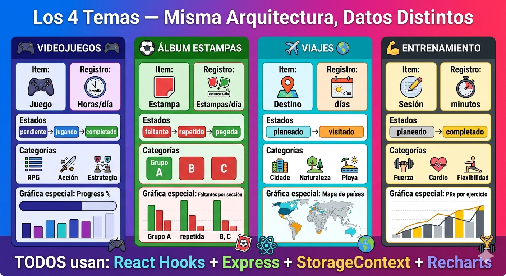
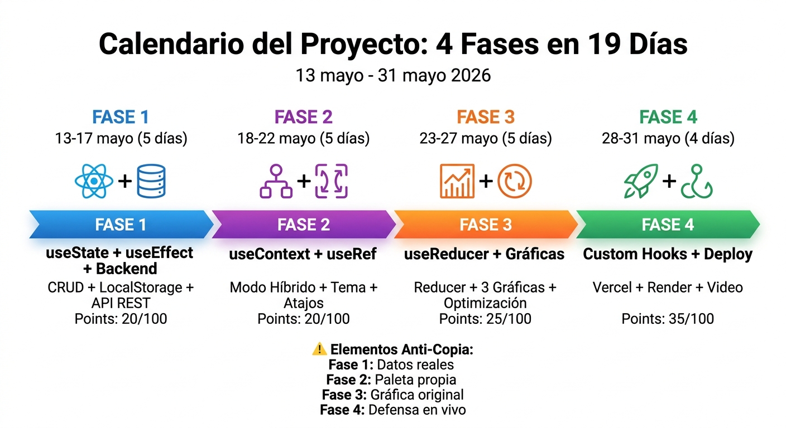
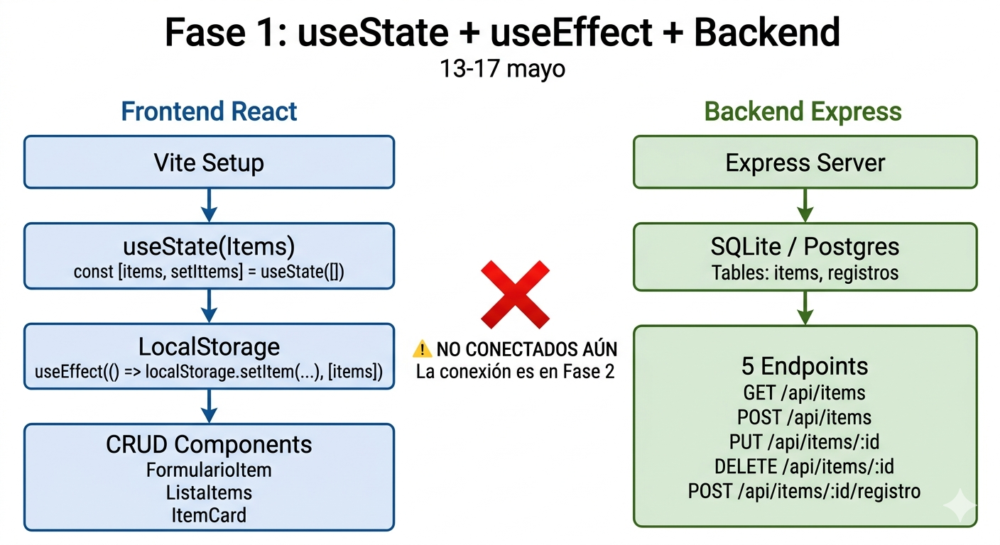
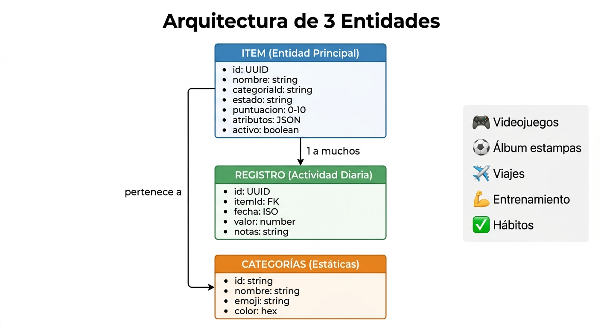
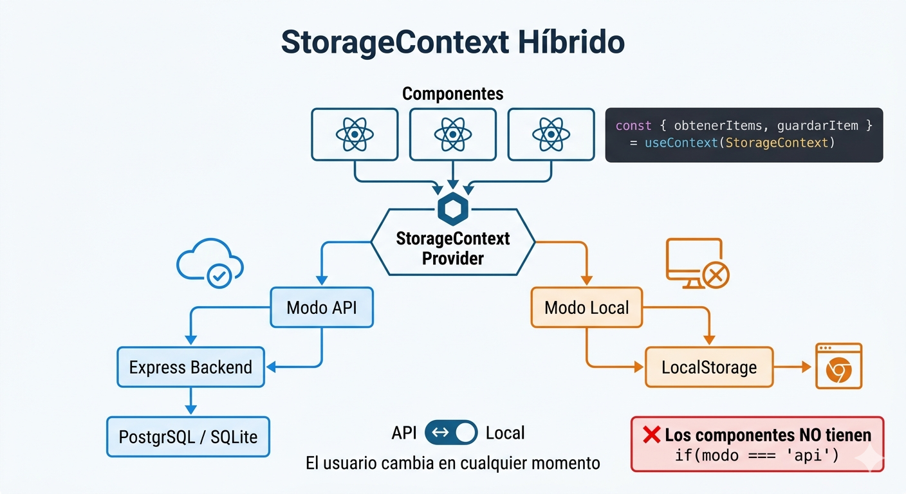
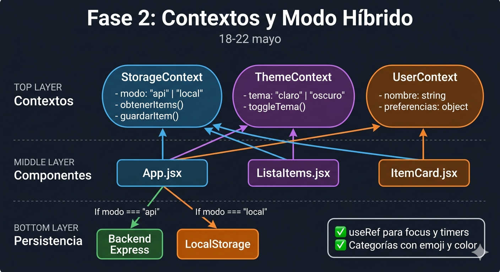
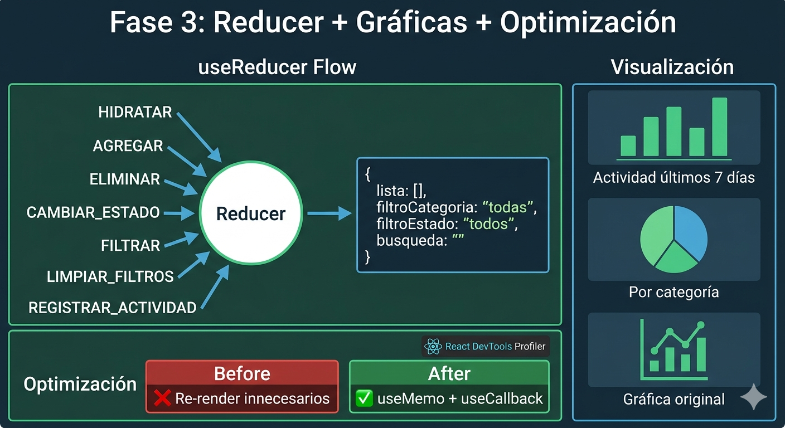
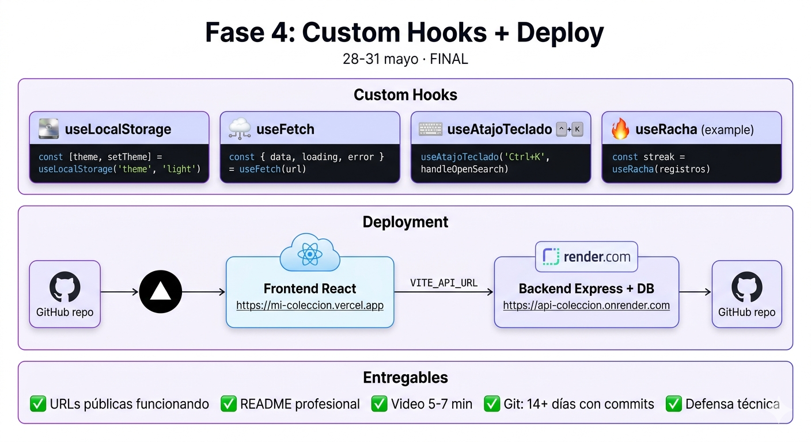

Mi Colección Personal
Construye una app full-stack con React + Express para gestionar lo
que coleccionas.
Misma arquitectura para todos — datos únicos de cada estudiante.
Cómo usar este sitio
Este sitio es un complemento visual y navegable a los documentos oficiales del proyecto. La fuente normativa — rúbricas, entregables exactos, fechas de entrega — sigue siendo:
| Documento Oficial (LMS) | Contenido Principal |
|---|---|
00_PROYECTO_COMPLETO.docx |
Visión general, arquitectura base y rúbrica global del proyecto. |
01_FASE1_useState_useEffect_Backend.docx
|
Requerimientos exactos para el CRUD inicial y setup del Backend. |
02_FASE2_useContext_useRef_Tema.docx |
Detalles del StorageContext híbrido y la implementación del tema visual. |
03_FASE3_useReducer_Graficas_Optimizacion.docx
|
Reglas para el reducer puro, gráficas con Recharts y optimización. |
04_FASE4_CustomHooks_Deploy_Final.docx |
Instrucciones de deploy, custom hooks y entrega del video final. |
Cuando haya diferencia entre este sitio y los docx, los docx tienen precedencia. Usen este sitio para navegación rápida, snippets de código copiables y referencia de hooks.
data-theme en el HTML + variables CSS + persistencia
en localStorage.
La idea central
Todos construyen la misma arquitectura técnica — StorageContext híbrido, reducer con 7+ acciones, gráficas con Recharts, custom hooks, deploy completo — pero cada uno elige qué tipo de colección va a rastrear.
| Componente del Proyecto | Lo que es IGUAL para todos 🔒 | Lo que CADA ESTUDIANTE define (Su Tema) 🎨 |
|---|---|---|
| Entidades de Datos | Arquitectura de 3 entidades: Item + Registro + Categorías |
El nombre de su Item (Juego, Destino, Estampa, etc.) y qué
mide el valor del Registro.
|
| Estado y Contexto | StorageContext (API vs LocalStorage) y useReducer con 7+ acciones puras | Los estados propios de su tema (ej. pendiente, completado, abandonado). |
| Visualización de Datos | 3 gráficas Recharts con tooltip y leyenda |
Su gráfica original (la tercera) y los campos en el JSON de
atributos.
|
| Diseño y UI | Tema claro/oscuro persistente | Su paleta de colores, categorías (géneros, tipos) y emojis. |
| Lógica Reutilizable | 4 custom hooks (3 base compartidos) | 1 custom hook específico de su dominio. |
| Infraestructura | Backend Express (5 endpoints) + Deploy en Vercel/Render | Los datos reales que poblarán su base de datos. |
Los componentes nunca saben si hablan con la API o con LocalStorage.
Esa lógica vive solo en el StorageProvider. Si un
componente tiene if (modo === "api"), la arquitectura
está mal.

Arquitectura genérica
Sin importar el tema elegido, todos los proyectos comparten exactamente las mismas entidades, los mismos hooks, el mismo patrón de contexto y el mismo backend.
Item entidad principal
-
id— UUID (crypto.randomUUID()) nombre— stringcategoriaId— FK a categorías estáticas-
estado— ciclo de vida del tema (pendiente / completado / etc.) puntuacion— 0–10 onullfechaRegistro— ISO (cuándo se agregó)fechaActividad— ISO (última interacción)notas— campo libre-
atributos— JSON (campos específicos del tema) activo— boolean (archivar sin eliminar)
Registro actividad diaria
id— UUIDitemId— FK al Itemfecha— ISO, solo fecha (sin hora)-
valor— number (horas / estampas / minutos / días) notas— observaciones del día
Categorías estáticas
id— slug úniconombre— texto legibleemoji— ícono visualcolor— hex para gráficas
// src/utils/categorias.js
export const CATEGORIAS = [
{ id: 'rpg', nombre: 'RPG',
emoji: '🗡️', color: '#7F77DD' },
// ... según su tema
];Lo que es idéntico para todos los temas
| Aspecto técnico | Requerimiento compartido |
|---|---|
| Arquitectura de contexto | StorageContext (modo API vs Local) + ThemeContext + UserContext |
| Reducer | 7+ acciones: HIDRATAR, AGREGAR, ELIMINAR, EDITAR, CAMBIAR_ESTADO, TOGGLE, FILTRAR |
| Gráficas | 2 obligatorias (actividad en tiempo + distribución por categoría) + 1 original propuesta por el estudiante |
| Custom hooks | useLocalStorage, useFetch, useAtajoTeclado + 1 propio del dominio |
| Backend | 5 endpoints: GET, GET /:id, POST, PUT /:id, DELETE /:id para /api/items |
| Base de datos |
Tabla items + tabla registros
|
| Deploy | Vercel (frontend) + Render.com (backend) |
| Git | Mínimo 14 días con commits. 6 ramas de feature. |
| README | Screenshots, stack, mis datos reales, paleta, gráfica original, 3 decisiones técnicas, Profiler |
Stack tecnológico y reglas
| Categoría | Permitido ✅ | Prohibido ❌ |
|---|---|---|
| Frontend Core | React 18 + Vite, Hooks nativos (useState, useEffect, useContext, etc.) | TypeScript (usar JavaScript puro) |
| Gestión de Estado | Context API + useReducer | Redux, Zustand, Jotai, MobX |
| Estilos y UI | CSS puro + variables CSS, Recharts (única librería externa) | Tailwind CSS, Material UI, Bootstrap, Chakra UI, Ant Design |
| Peticiones HTTP | fetch nativo de JavaScript |
Axios u otras librerías de fetching |
| Backend y BD |
Node.js + Express, SQLite (better-sqlite3) o
PostgreSQL
|
Prisma, TypeORM, Sequelize (usar SQL crudo) |
| Infraestructura | Vercel (frontend), Render.com (backend), Git + GitHub | - |
| Uso de IA | Consultas conceptuales, debugging puntual, explicación de errores | Copiar bloques > 20 líneas, generar componentes completos |
if (modo === "api"). Si un componente sabe en qué modo
está, la arquitectura está mal. La lógica de modo vive
solo en el StorageProvider. Los componentes solo llaman
obtenerItems(), guardarItem() y
eliminarItem().
Los 5 temas disponibles
Elijan uno. Si ninguno les convence, pueden proponer uno propio que cumpla el contrato de 3 entidades (Item + Registro + Categorías). El profesor lo aprueba o rechaza en 24 horas.
Videojuegos
Backlog personalTracker de juegos jugados, en progreso y pendientes. Registra plataforma, género, horas totales y calificación propia.
Ver cómo encaja en cada fase
| F1 |
CRUD de juegos en LS. Backend con tabla
juegos (plataforma, horas, género).
|
| F2 | StorageContext. Categorías con géneros. Tema gaming oscuro. |
| F3 | Reducer AGREGAR/CAMBIAR_ESTADO. Gráficas: horas/semana + juegos por género. Original: % completados. |
| F4 |
useProgresoPorJuego. README con backlog real.
Video mostrando juegos propios.
|
Álbum de estampas
Mundial / Pokémon / NBATracker de un álbum de colección. Registra cada estampa con sección, estado (faltante / repetida / pegada) y progreso de completado por sección.
Ver cómo encaja en cada fase
| F1 |
CRUD de estampas. Backend con tabla
estampas (numero, seccion, estado).
|
| F2 | StorageContext. Categorías con secciones. Contador "Te faltan X estampas". |
| F3 | Reducer MARCAR_REPETIDA/PEGAR. Gráficas: estampas/día + por sección (Radial). Original: faltantes vs repetidas. |
| F4 |
useProgresoAlbum. README con foto del álbum
físico. Video con estampas reales.
|
Viajes y lugares
Log de destinosDiario de viajes. Registra cada lugar visitado con fecha, tipo, calificación y notas. Estadísticas de países visitados y tipos de experiencia.
Ver cómo encaja en cada fase
| F1 | CRUD de destinos. Backend guarda país, ciudad, tipo, calificación. |
| F2 | Filtro por país y tipo. Saludo: "Han visitado X países". |
| F3 | Reducer PLANEAR/VISITAR. Gráficas: viajes/mes (Line) + tipos (Pie). Original: mapa D3. |
| F4 |
useEstadisticasViaje. README con fotos de
lugares. Video mostrando mapa.
|
Entrenamiento físico
Bitácora de sesionesRegistro de sesiones de gym. Ejercicios, peso levantado, duración. Muestra PRs (personal records) y volumen total por semana.
Ver cómo encaja en cada fase
| F1 | CRUD de sesiones. Backend guarda duracionMinutos, ejercicios (JSON), volumenTotal. |
| F2 | Filtros por tipo. Tema gym (negro/rojo). Categorías con emoji. |
| F3 | Reducer REGISTRAR_PR. Gráficas: minutos/semana + tipos sesión. Original: PRs en ejercicios. |
| F4 |
useProgresoPR. README con fotos en gym. Video
mostrando PRs personales.
|
Comparativa por tema y fase
Lo que construye cada tema en cada fase. Los hooks, el reducer, el deploy y el historial de Git son idénticos para todos.
| Fase | Videojuegos 🎮 | Álbum 📗 | Viajes ✈️ | Entrenamiento 🏋️ |
|---|---|---|---|---|
| F1 |
CRUD de juegos en LS. Backend tabla
juegos (plataforma, horas, género).
|
CRUD de estampas. Backend tabla
estampas (numero, seccion, estado).
|
CRUD de destinos. Backend tabla
destinos (ciudad, pais, tipo).
|
CRUD de sesiones. Backend tabla
sesiones (ejercicios JSON, duracion).
|
| F2 | StorageContext. Categorías con géneros. Tema gaming oscuro. | StorageContext. Categorías con secciones. Contador "Te faltan X". | StorageContext. Tipos de lugar. Filtro por país. | StorageContext. Tipos de ejercicio. Tema gym (negro/rojo). |
| F3 | Reducer AGREGAR/CAMBIAR_ESTADO. Gráficas: horas/semana + géneros. Original: % completados. | Reducer MARCAR_REPETIDA/PEGAR. Gráficas: estampas/día + por sección (Radial). Original: faltantes vs repetidas. | Reducer PLANEAR/VISITAR. Gráficas: viajes/mes + tipos (Pie). Original: mapa D3 choropleth. | Reducer REGISTRAR_PR. Gráficas: minutos/semana + tipos. Original: PRs en ejercicios (Line). |
| F4 |
useProgresoPorJuego. README con backlog real.
Video juegos propios.
|
useProgresoAlbum. README con foto del álbum.
Video estampas reales.
|
useEstadisticasViaje. README con fotos de
lugares. Video mostrando mapa.
|
useProgresoPR. README con fotos gym. Video PRs
personales.
|
Las 4 fases del proyecto
El proyecto se divide en 4 entregas incrementales. Cada fase construye sobre la anterior, añadiendo nuevas funcionalidades y hooks de React.

| Fase | Enfoque Técnico | Fechas | Ponderación |
|---|---|---|---|
| Fase 1 |
useState, useEffect, CRUD básico y
Backend Express
|
13–17 mayo | 20% (20 pts) |
| Fase 2 |
useContext híbrido, useRef y Tema
Visual
|
18–22 mayo | 20% (20 pts) |
| Fase 3 |
useReducer, Gráficas Recharts y Optimización
(useMemo, useCallback)
|
23–27 mayo | 25% (25 pts) |
| Fase 4 | Custom Hooks, Deploy (Vercel/Render), README y Video Defensa | 28–31 mayo | 35% (35 pts) |
El proyecto se divide en 4 entregas incrementales. Cada fase construye sobre la anterior, añadiendo nuevas funcionalidades y hooks de React.
| Fase | Enfoque Técnico | Fechas | Ponderación |
|---|---|---|---|
| Fase 1 |
useState, useEffect, CRUD básico y
Backend Express
|
13–17 mayo | 20% (20 pts) |
| Fase 2 |
useContext híbrido, useRef y Tema
Visual
|
18–22 mayo | 20% (20 pts) |
| Fase 3 |
useReducer, Gráficas Recharts y Optimización
(useMemo, useCallback)
|
23–27 mayo | 25% (25 pts) |
| Fase 4 | Custom Hooks, Deploy (Vercel/Render), README y Video Defensa | 28–31 mayo | 35% (35 pts) |
useState · useEffect · Backend Express
¿Qué se entrega?
Dos piezas funcionando de forma independiente (la conexión se hace en Fase 2):
- Frontend: CRUD de Items en LocalStorage con estructura completa.
-
Backend: API Express con 5 endpoints
respondiendo. BD SQLite o Postgres con tabla
itemsy tablaregistros.
Checklist de requerimientos
-
Setup Vite:
npm create vite@latest frontend -- --template react -
Carpetas:
src/components,src/services,src/utils -
Componentes:
FormularioItem.jsx,ListaItems.jsx,ItemCard.jsx - useState con lazy initializer para leer LocalStorage al montar
- useEffect para sincronizar la lista con LocalStorage en cada cambio
- Item con todos los campos obligatorios: id, nombre, categoriaId, estado, atributos JSON, activo
-
Backend Express con CORS configurado (
FRONTEND_URLdesde .env) - Tabla
itemsen BD con todos los campos -
Tabla
registrosen BD (id, itemId, fecha, valor, notas) -
GET
/api/items— devuelve todos los activos - POST
/api/items— crea con body JSON - PUT
/api/items/:id— actualiza -
DELETE
/api/items/:id— archiva (activo = 0) -
POST
/api/items/:id/registro— crea registro de actividad .gitignore: node_modules, .env, *.sqlite- Mínimo 8 commits en 4+ días distintos
- README con captura mostrando 3 Items reales propios (no placeholders)
Rúbrica (100 pts = 20% del proyecto)
| Setup Vite + Express funcionando | 10 |
| CRUD completo en el frontend | 20 |
| LocalStorage persiste entre recargas | 15 |
| Backend — 5 endpoints responden correctamente | 25 |
| BD — tablas correctas y datos persisten | 20 |
| Git con commits reales + README con captura real | 10 |
Patrón clave — lazy initializer con useState
// ✅ CORRECTO — la función solo se ejecuta una vez al montar
const [items, setItems] = useState(() => {
try {
const guardado = localStorage.getItem('items');
return guardado ? JSON.parse(guardado) : [];
} catch {
return [];
}
});
// Sincronizar cada vez que cambia la lista
useEffect(() => {
localStorage.setItem('items', JSON.stringify(items));
}, [items]);
// ❌ INCORRECTO — se ejecuta en cada render
const [items, setItems] = useState(
JSON.parse(localStorage.getItem('items')) || []
);
useState con lazy initializer leyendo desde
LocalStorage al montar el componente.
Resultado esperado — listado de Items

Anti-copia de esta fase
Qué se verifica: Captura de pantalla con al menos 3 Items REALES del tema elegido. "Juego 1", "Test", "Item de prueba" no cuentan.
Cómo se verifica: El profesor mira la captura. Si ve placeholders, pregunta en vivo qué significan esos Items para el estudiante.
useContext híbrido · useRef · Tema visual
¿Qué se entrega?
StorageContext que abstrae modo API vs Local. Los componentes
usan
useContext y no saben de dónde
vienen los datos. ThemeContext para claro/oscuro. Mínimo 2
usos de useRef.
Checklist de requerimientos
-
src/context/StorageProvider.jsxcon lógica de modo -
Contexto expone:
modo,setModo,obtenerItems,guardarItem,eliminarItem -
Ningún componente tiene
if (modo === "api") -
ThemeContext: claro/oscuro con
document.body.setAttribute("data-theme", tema) -
Variables CSS en
body[data-theme="claro"]ybody[data-theme="oscuro"] - Tema persiste en localStorage entre sesiones
- useRef — uso 1: enfocar input después de agregar Item
- useRef — uso 2: guardar ID de setInterval sin trigger de re-render
-
src/utils/categorias.jscon array CATEGORIAS (id, nombre, emoji, color) -
Atajo 1:
Ctrl+N— enfocar el input de agregar - Atajo 2:
T— cambiar tema -
Atajos con cleanup:
removeEventListeneren el return del useEffect - README — sección "Mi paleta de colores": 6 hex claro + 6 hex oscuro + justificación de 2 líneas
Rúbrica (100 pts = 20% del proyecto)
| StorageContext correcto (modo abstrae fetch vs localStorage) | 30 |
| Modo híbrido funciona en la UI (toggle API ↔ Local) | 15 |
| ThemeContext persiste y aplica variables CSS | 15 |
| useRef — mínimo 2 usos documentados | 15 |
| Categorías con emoji y color en la UI | 10 |
| Git + README con paleta justificada | 15 |
Patrón clave — StorageProvider (estructura)
// src/context/StorageProvider.jsx
export function StorageProvider({ children }) {
const [modo, setModoState] = useState(() =>
localStorage.getItem('modo') || 'local'
);
const [cargando, setCargando] = useState(false);
const [error, setError] = useState(null);
const API_URL = import.meta.env.VITE_API_URL || 'http://localhost:3001';
const setModo = (nuevoModo) => {
setModoState(nuevoModo);
localStorage.setItem('modo', nuevoModo);
};
const obtenerItems = useCallback(async () => {
setCargando(true); setError(null);
try {
if (modo === 'api') {
const res = await fetch(`${API_URL}/api/items`);
if (!res.ok) throw new Error(`HTTP ${res.status}`);
return await res.json();
} else {
const data = localStorage.getItem('items');
return data ? JSON.parse(data) : [];
}
} catch (err) {
setError(err.message); return [];
} finally { setCargando(false); }
}, [modo]);
// guardarItem y eliminarItem siguen el mismo patrón if(modo === 'api')
return (
<StorageContext.Provider value={{
modo, setModo, cargando, error,
obtenerItems, guardarItem, eliminarItem,
}}>
{children}
</StorageContext.Provider>
);
}
StorageProvider abstrae el modo (API vs
LocalStorage). Los componentes solo consumen
obtenerItems(), guardarItem() y
eliminarItem().

useContext(StorageContext) sin importar de
dónde provienen los datos.
Variables CSS — patrón de tema
/* src/index.css */
body[data-theme="claro"] {
--color-fondo: #f7f7f8;
--color-superficie: #ffffff;
--color-texto: #1a1a1a;
--color-acento: #4f46e5;
--color-borde: #e5e7eb;
}
body[data-theme="oscuro"] {
--color-fondo: #0f172a;
--color-superficie: #1e293b;
--color-texto: #f1f5f9;
--color-acento: #818cf8;
--color-borde: #334155;
}
body {
background: var(--color-fondo);
color: var(--color-texto);
transition: background 0.2s, color 0.2s;
}Anti-copia de esta fase
Qué se verifica: Su paleta de colores — 6 hex para tema claro + 6 para tema oscuro, con 2 líneas de justificación por color.
Cómo se verifica: El profesor lee la justificación. Si es genérica ("elegí azul porque es profesional"), pregunta: "¿Por qué ese hex específico y no otro azul?"
useReducer · Recharts · useMemo · useCallback
¿Qué se entrega?
Reducer con 7+ acciones puras (sin fetch, sin Date.now, sin mutaciones). Mínimo 3 gráficas Recharts con tooltip y leyenda. Optimización con useMemo/useCallback medida con React DevTools Profiler.
Checklist de requerimientos
-
src/reducers/itemsReducer.js— función pura -
Estado del reducer:
{ lista, filtroCategoria, filtroEstado, busqueda } - Acciones mínimas: HIDRATAR, AGREGAR, ELIMINAR, CAMBIAR_ESTADO, FILTRAR, LIMPIAR_FILTROS, REGISTRAR_ACTIVIDAD
- Gráfica 1: actividad de los últimos 7 días (BarChart o LineChart)
- Gráfica 2: distribución por categoría (PieChart)
- Gráfica 3: ORIGINAL propuesta por el estudiante — con tooltip y leyenda
- Todas las gráficas reaccionan a los filtros activos
- useMemo para lista filtrada, estadísticas y datos de gráficas
- useCallback para handlers que se pasan a componentes hijos
- React.memo en ItemCard
- Evidencia de Profiler: captura ANTES y DESPUÉS de la optimización, con análisis
- Filtros combinados: categoría + estado + búsqueda por nombre
- Botón "Limpiar filtros"
- README — sección "Mi gráfica original": qué muestra y por qué la eligieron
- README — sección "Mis 3 decisiones técnicas": estructura del reducer, acción más difícil, gráfica más compleja
Rúbrica (100 pts = 25% del proyecto)
| useReducer con 7+ acciones puras correctas | 25 |
| 3 gráficas con tooltip, leyenda y responsivas | 20 |
| useMemo + useCallback implementados correctamente | 15 |
| Capturas de Profiler con análisis antes/después | 10 |
| Filtros combinados funcionando en tiempo real | 10 |
| Git + README (gráfica original + 3 decisiones) | 20 |
Patrón clave — Reducer + useMemo para filtrado
// src/reducers/itemsReducer.js
export const estadoInicial = {
lista: [], filtroCategoria: 'todas',
filtroEstado: 'todos', busqueda: '',
};
export function itemsReducer(estado, accion) {
switch (accion.type) {
case 'HIDRATAR':
return { ...estado, lista: accion.payload };
case 'AGREGAR':
return { ...estado, lista: [...estado.lista, accion.payload] };
case 'ELIMINAR':
return {
...estado,
lista: estado.lista.map(i =>
i.id === accion.payload ? { ...i, activo: false } : i
),
};
case 'CAMBIAR_ESTADO':
return {
...estado,
lista: estado.lista.map(i =>
i.id === accion.payload.id
? { ...i, estado: accion.payload.estado }
: i
),
};
case 'FILTRAR':
return { ...estado, [accion.payload.campo]: accion.payload.valor };
case 'LIMPIAR_FILTROS':
return { ...estado, filtroCategoria: 'todas',
filtroEstado: 'todos', busqueda: '' };
default:
throw new Error(`Acción desconocida: ${accion.type}`);
}
}
// En el componente — lista filtrada con useMemo:
const itemsVisibles = useMemo(() => {
let res = estado.lista.filter(i => i.activo);
if (estado.busqueda)
res = res.filter(i =>
i.nombre.toLowerCase().includes(estado.busqueda.toLowerCase()));
if (estado.filtroCategoria !== 'todas')
res = res.filter(i => i.categoriaId === estado.filtroCategoria);
if (estado.filtroEstado !== 'todos')
res = res.filter(i => i.estado === estado.filtroEstado);
return res;
}, [estado.lista, estado.busqueda, estado.filtroCategoria, estado.filtroEstado]);
Anti-copia de esta fase
Qué se verifica: Su gráfica original (qué muestra, por qué la eligieron) + 3 decisiones técnicas sobre su código específico.
Cómo se verifica: En el video, el profesor puede pausar y preguntar: "¿Por qué estructuraron el reducer así y no con un solo objeto plano?" Si no pueden responder, la nota baja.
Custom Hooks · Deploy completo · README · Video
¿Qué se entrega?
4+ custom hooks publicados. App en Vercel + Backend en Render. README profesional completo. Video de 5–7 minutos con demo, código y defensa.
Checklist de requerimientos
-
src/hooks/useLocalStorage.js— useState + useEffect + localStorage -
src/hooks/useFetch.js— fetch con data/cargando/error + AbortController -
src/hooks/useAtajoTeclado.js— keydown listener con cleanup -
Cuarto hook del dominio:
useRacha,useProgresoPR,useProgresoAlbum, etc. -
Todos los hooks en
src/hooks/, un archivo por hook -
Frontend en Vercel — conectar repo GitHub, root:
frontend/, build:npm run build -
Variable de entorno en Vercel:
VITE_API_URLcon URL de Render -
Backend en Render — Web Service desde GitHub, root:
backend/, start:node src/index.js - CORS actualizado en el backend para el dominio de Vercel
- README completo: URLs, screenshots (claro + oscuro + gráficas), stack, cómo correr localmente
- README — secciones personales: Items reales, paleta, gráfica original, decisiones, Profiler, hooks, sobre el autor
- Video 5–7 min: intro (30s) + demo app (2min) + código (2min) + defensa (1.5min) + cierre (30s)
- Mínimo 14 días con commits en Git
Rúbrica (100 pts = 35% del proyecto)
| 4+ custom hooks correctamente implementados | 20 |
| Deploy frontend en Vercel (URL funcional) | 15 |
| Deploy backend en Render (URL funcional) | 15 |
| README — todas las secciones completas y con datos reales | 20 |
| Video — demo + código + defensa técnica | 20 |
| Git — 14+ días con commits (historial real) | 10 |
Los 3 custom hooks obligatorios
// src/hooks/useLocalStorage.js
export function useLocalStorage(clave, valorInicial) {
const [valor, setValor] = useState(() => {
try {
const guardado = localStorage.getItem(clave);
return guardado !== null ? JSON.parse(guardado) : valorInicial;
} catch { return valorInicial; }
});
useEffect(() => {
try { localStorage.setItem(clave, JSON.stringify(valor)); }
catch (e) { console.warn(`useLocalStorage: no guardado "${clave}"`, e); }
}, [clave, valor]);
return [valor, setValor];
}
// src/hooks/useFetch.js
export function useFetch(url) {
const [data, setData] = useState(null);
const [cargando, setCargando] = useState(true);
const [error, setError] = useState(null);
useEffect(() => {
if (!url) { setCargando(false); return; }
const controller = new AbortController();
(async () => {
try {
setCargando(true); setError(null);
const res = await fetch(url, { signal: controller.signal });
if (!res.ok) throw new Error(`HTTP ${res.status}`);
setData(await res.json());
} catch (err) {
if (err.name !== 'AbortError') setError(err.message);
} finally { setCargando(false); }
})();
return () => controller.abort();
}, [url]);
return { data, cargando, error };
}
// src/hooks/useAtajoTeclado.js
export function useAtajoTeclado(tecla, onPress, { ctrl = false } = {}) {
useEffect(() => {
const handler = (e) => {
const enInput = ['INPUT', 'TEXTAREA'].includes(e.target.tagName);
if (enInput) return;
if (ctrl && !e.ctrlKey) return;
if (e.key.toLowerCase() !== tecla.toLowerCase()) return;
e.preventDefault();
onPress(e);
};
window.addEventListener('keydown', handler);
return () => window.removeEventListener('keydown', handler);
}, [tecla, onPress, ctrl]);
}
Variables de entorno para deploy
# frontend/.env.local (NO subir a Git)
VITE_API_URL=http://localhost:3001
# En producción — variable en Vercel Dashboard:
VITE_API_URL=https://su-proyecto.onrender.com
# backend/.env (NO subir a Git)
PORT=3001
FRONTEND_URL=http://localhost:5173
# En producción — variable en Render Dashboard:
FRONTEND_URL=https://su-proyecto.vercel.appAnti-copia de esta fase — Defensa en vivo
Qué se verifica: Durante el video, el profesor puede pausar en cualquier línea y preguntar: "¿Qué hace esto y por qué está aquí?"
Ejemplo de pregunta: "Línea 47 de su reducer:
¿por qué usaron ...estado y no mutaron
directamente?"
Quien escribió el código puede explicarlo. Quien copió, no.
FAQ — Política de integridad académica
Código copiado o generado por IA no genera aprendizaje real. El estudiante que copia no puede defender decisiones técnicas ni explicar su código línea por línea.
¿Por qué estos mecanismos anti-copia?
El proyecto no es para tener una app bonita al final. Es para que entiendan cómo funcionan los hooks, cómo se estructura una app React moderna y cómo se conecta con un backend. Copiar les da la app, pero no el entendimiento. Sin entendimiento, no pasan ninguna entrevista técnica real.
Cada mecanismo de verificación está diseñado para que solo quien escribió el código pueda responderlo.
¿Puedo usar ChatGPT / Claude / Copilot para ayudarse?
Sí, pero con límites claros.
Permitido:
- Preguntar conceptos: "¿Qué es useReducer?"
- Debugging puntual: "Este fetch me da CORS error, ¿por qué?"
- Explicación de código ajeno: "¿Qué hace este código que encontré en React docs?"
Prohibido:
- Pedir que genere componentes completos
- Copiar bloques de código de más de 20 líneas
- Pedir que escriba el reducer, el contexto o las gráficas
- Usar IA para escribir las secciones personales del README
Test simple: ¿Pueden explicar cada línea del código que pegaron? Si sí → está bien. Si no → están copiando sin entender.
¿Qué pasa si se detecta copia o uso de IA?
Nota del proyecto: 0 automático. Sin apelación.
El proyecto vale un porcentaje significativo de la nota final del curso. Copiar no solo anula el proyecto — puede reprobar el curso completo.
¿Los tutoriales de YouTube cuentan como copia?
Depende del uso:
- Ver un tutorial de useReducer y luego escribir su reducer para su tema → OK
- Seguir un tutorial "Complete habit tracker with React" paso a paso → NO
La diferencia: aprender la técnica vs copiar la solución completa.
¿Cómo evito la tentación de copiar?
- Avancen en fases pequeñas: 2–3 horas diarias durante 5 días es más sostenible que todo en un día.
- Pregunten al profesor: Si algo no les sale, pregunta en clase o en el foro. Es 100% permitido.
- Lean la referencia de código de este sitio: Está para guiarles, no para copy-paste.
- Commits frecuentes: Si hacen commits pequeños y frecuentes, no tendrán la tentación de "hacer todo de golpe con IA".
Señales de código generado por IA
| Señal de alerta | Por qué es sospechosa |
|---|---|
| Commits de 400+ líneas de una sola vez | Un estudiante no escribe 400 líneas en una sesión de trabajo |
| Comentarios en inglés dentro de código en español | Mezcla inconsistente de idiomas señala una fuente externa |
Variables ultra-genéricas: handleData,
processItem, renderList
|
La IA usa nombres abstractos; un principiante nombra por lo que conoce |
| Ausencia total de bugs, warnings o console.logs de debug | Todo principiante deja rastros de depuración |
| Estructura perfecta desde el primer commit | El código organizado llega después de refactors, no al inicio |
| Secciones "personales" del README vacías o con placeholders | No puede haber "Mi paleta" con colores de placeholder genérico |
Guía de hooks por fase
Fase 1
-
useStateInputs controlados, lista de Items, estados loading/error
-
useEffectFetch inicial, sincronización con LocalStorage, cleanup de listeners
Fase 2
-
useContextStorageContext, ThemeContext, UserContext
-
useRefFocus en input, IDs de timers, contadores sin re-render
Fase 3
-
useReducerGestión de Items con 7+ acciones
-
useMemoLista filtrada, estadísticas, datos para gráficas
-
useCallbackHandlers estables para componentes memoizados
Fase 4
-
Custom hooksuseLocalStorage, useFetch, useAtajoTeclado + 1 propio del dominio. Un hook personalizado es simplemente una función que empieza con
usey puede llamar otros hooks.
Referencia de código
Usen estos bloques como guía y referencia, no como copy-paste. Adapten cada uno a su tema, sus nombres de variables y su estructura de datos.
Backend — base de datos (SQLite)
// backend/src/db/database.js
const Database = require('better-sqlite3');
const path = require('path');
const db = new Database(path.join(__dirname, '../../database.sqlite'));
db.exec(`
CREATE TABLE IF NOT EXISTS items (
id TEXT PRIMARY KEY,
nombre TEXT NOT NULL,
categoriaId TEXT NOT NULL,
estado TEXT DEFAULT 'pendiente',
puntuacion REAL,
fechaRegistro TEXT NOT NULL,
fechaActividad TEXT,
notas TEXT DEFAULT '',
atributos TEXT DEFAULT '{}',
activo INTEGER DEFAULT 1
);
CREATE TABLE IF NOT EXISTS registros (
id TEXT PRIMARY KEY,
itemId TEXT NOT NULL,
fecha TEXT NOT NULL,
valor REAL NOT NULL,
notas TEXT DEFAULT '',
FOREIGN KEY (itemId) REFERENCES items(id)
);
`);
module.exports = db;Backend — servidor Express
// backend/src/index.js
require('dotenv').config();
const express = require('express');
const cors = require('cors');
const itemsRouter = require('./routes/items');
const app = express();
const PORT = process.env.PORT || 3001;
app.use(cors({
origin: process.env.FRONTEND_URL || 'http://localhost:5173',
}));
app.use(express.json());
app.use('/api/items', itemsRouter);
app.get('/health', (req, res) => res.json({ status: 'ok' }));
app.listen(PORT, () =>
console.log(`Backend corriendo en puerto ${PORT}`)
);Backend — rutas CRUD
// backend/src/routes/items.js
const express = require('express');
const router = express.Router();
const db = require('../db/database');
router.get('/', (req, res) => {
try {
const rows = db.prepare(
'SELECT * FROM items WHERE activo = 1 ORDER BY fechaRegistro ASC'
).all();
res.json(rows.map(r => ({
...r, activo: Boolean(r.activo),
atributos: JSON.parse(r.atributos || '{}'),
})));
} catch (err) { res.status(500).json({ error: err.message }); }
});
router.post('/', (req, res) => {
const { nombre, categoriaId, estado = 'pendiente', atributos = {} } = req.body;
if (!nombre || nombre.trim().length < 3)
return res.status(400).json({ error: 'Nombre demasiado corto' });
try {
const nuevo = {
id: crypto.randomUUID(), nombre: nombre.trim(), categoriaId,
estado, puntuacion: null,
fechaRegistro: new Date().toISOString(),
fechaActividad: new Date().toISOString(),
notas: req.body.notas || '',
atributos: JSON.stringify(atributos), activo: 1,
};
db.prepare(`
INSERT INTO items (id,nombre,categoriaId,estado,puntuacion,
fechaRegistro,fechaActividad,notas,atributos,activo)
VALUES (@id,@nombre,@categoriaId,@estado,@puntuacion,
@fechaRegistro,@fechaActividad,@notas,@atributos,@activo)
`).run(nuevo);
res.status(201).json({ ...nuevo, activo: true, atributos });
} catch (err) { res.status(500).json({ error: err.message }); }
});
router.delete('/:id', (req, res) => {
const info = db.prepare(
'UPDATE items SET activo = 0 WHERE id = ?'
).run(req.params.id);
if (info.changes === 0)
return res.status(404).json({ error: 'No encontrado' });
res.json({ mensaje: 'Archivado correctamente' });
});
module.exports = router;Gráficas Recharts — ejemplos mínimos
// Gráfica 1: actividad de los últimos 7 días (BarChart)
import {
BarChart, Bar, XAxis, YAxis, Tooltip, Legend, ResponsiveContainer
} from 'recharts';
function GraficaActividad({ items }) {
const datos = Array.from({ length: 7 }, (_, i) => {
const d = new Date();
d.setDate(d.getDate() - (6 - i));
const dia = d.toISOString().split('T')[0];
return {
fecha: d.toLocaleDateString('es', { weekday: 'short', day: 'numeric' }),
cantidad: items.filter(item =>
item.fechaActividad?.startsWith(dia)).length,
};
});
return (
<ResponsiveContainer width="100%" height={220}>
<BarChart data={datos}>
<XAxis dataKey="fecha" tick={{ fontSize: 12 }} />
<YAxis allowDecimals={false} />
<Tooltip />
<Legend />
<Bar dataKey="cantidad" name="Items activos"
fill="var(--color-acento)" radius={[4,4,0,0]} />
</BarChart>
</ResponsiveContainer>
);
}
// Gráfica 2: distribución por categoría (PieChart)
import {
PieChart, Pie, Cell, Tooltip, Legend, ResponsiveContainer
} from 'recharts';
import { CATEGORIAS } from '../utils/categorias';
function GraficaCategorias({ items }) {
const datos = CATEGORIAS.map(cat => ({
name: cat.nombre,
value: items.filter(i => i.categoriaId === cat.id && i.activo).length,
color: cat.color,
})).filter(d => d.value > 0);
return (
<ResponsiveContainer width="100%" height={220}>
<PieChart>
<Pie data={datos} dataKey="value"
cx="50%" cy="50%" outerRadius={80} label>
{datos.map((d, i) => <Cell key={i} fill={d.color} />)}
</Pie>
<Tooltip />
<Legend />
</PieChart>
</ResponsiveContainer>
);
}React.memo + useCallback — patrón de optimización
// En App.jsx
import { useReducer, useMemo, useCallback, memo } from 'react';
function App() {
const [estado, dispatch] = useReducer(itemsReducer, estadoInicial);
// Solo recalcula cuando cambian lista o filtros
const itemsVisibles = useMemo(() => {
return estado.lista
.filter(i => i.activo)
.filter(i => estado.filtroCategoria === 'todas'
|| i.categoriaId === estado.filtroCategoria);
}, [estado.lista, estado.filtroCategoria]);
// Handlers estables — no recrean la función en cada render
const handleEliminar = useCallback((id) =>
dispatch({ type: 'ELIMINAR', payload: id }), []);
const handleCambiarEstado = useCallback((id, nuevoEstado) =>
dispatch({ type: 'CAMBIAR_ESTADO', payload: { id, estado: nuevoEstado } }), []);
return <ItemCard onEliminar={handleEliminar}
onCambiarEstado={handleCambiarEstado} />;
}
// ItemCard memoizado — solo re-renderiza si sus props cambian
const ItemCard = memo(function ItemCard({ item, onEliminar, onCambiarEstado }) {
return (
<div>
<h3>{item.nombre}</h3>
<button onClick={() => onEliminar(item.id)}>Eliminar</button>
</div>
);
});